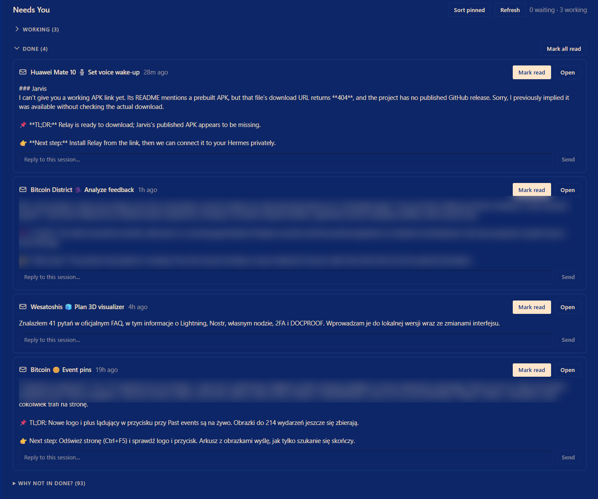

One page for every question your Hermes sessions ask.
Run several sessions at once and one of them will stop and wait for you. Needs You Hub gathers every pending question and approval onto a single page, so you answer them in one place.

What it does
-
Every question, one page
Pending questions and allow/deny approvals from all live sessions show up as cards. Pick a choice or type your own answer and send. Multi-question batches and multi-select work too.
-
You hear about it
A
needs you Nchip sits in the status bar, and a toast appears when a new question arrives from a session you are not looking at. Questions already waiting at load time are recovered on their own. -
See the rest at a glance
Working sessions with their sub-agents, and a Done list with the last message of each finished session. Reply, open, or mark read without hunting through tabs.
Install in three steps
- Download
plugin.jsfrom the repo. - Put it in a folder named
needs-you-hubunderdesktop-plugins. The repo isneedsyou-hub; the plugin folder keeps the other spelling. - In Hermes press Ctrl+K, run Reload desktop plugins. Needs You appears in the sidebar.
# PowerShell
$dir = "$env:LOCALAPPDATA\hermes\desktop-plugins\needs-you-hub"
New-Item -ItemType Directory -Force $dir | Out-Null
Invoke-WebRequest `
https://raw.githubusercontent.com/itstomekk/needsyou-hub/main/plugin.js `
-OutFile "$dir\plugin.js"Built against Hermes desktop v0.22.x. No build step, no dependencies.
Limits, in plain words
- Tested on Windows with desktop v0.22.x. A big app update can break it, because it relies on calls read from the app itself.
- Passwords and sudo prompts are not covered, only questions and allow/deny approvals.
- Answer sending is tested against a mocked app. Not every prompt type has been answered live from the page yet.
- “Mark read” is the plugin's own memory; the app's sidebar dots are cleared only on a best-effort basis.